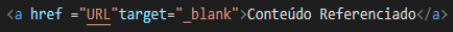
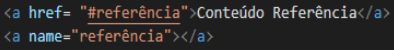
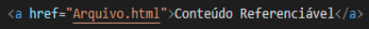
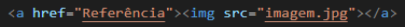
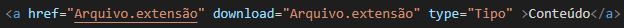
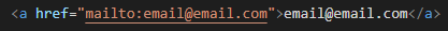

Hyperlinks ou links são uma referência dentro de um documento em hipertexto.
A marcação de hyperlinks acontece como a demonstração da sintaxe abaixo:
Os links ainda podem ser classificados como:
EXTERNOS ou REMOTOS-Referenciam as páginas web ou sites externos desejados, podendo esse ser aberto na mesma página ou numa aba diferente;
Sintaxe Hyperlink Externo para abrir na mesma página.

Sintaxe Hyperlink Externo para abrir numa nova aba.
INTERNOS-Referenciam um lugar diferente dentro da mesma página, podendo acessar diferentes seções de um documento;

Sintaxe Hyperlink Interno.
LOCAIS-Apontam para outras páginas dentro de um mesmo site.

Sintaxe Hyperlinks Locais.
Ainda podem ser usados com o intuito de:
Realizar hyperlinks em imagens, envolvendo a tag de imagem com a tag de hyperlink, fazendo assim com que a imagem possa ser aberta maior, assim que clicada;

Sintaxe de hyperlink em imagem.
Realizar downloads à partir de hyperlinks, já que são links que apontam para arquivos, deixando o download acessível;

Sintaxe de hyperlink para o download de arquivos.
Apontarem para um endereço eletrônico, assim que são clicados.

Sintaxe de hyperlink para endereço eletrônico.